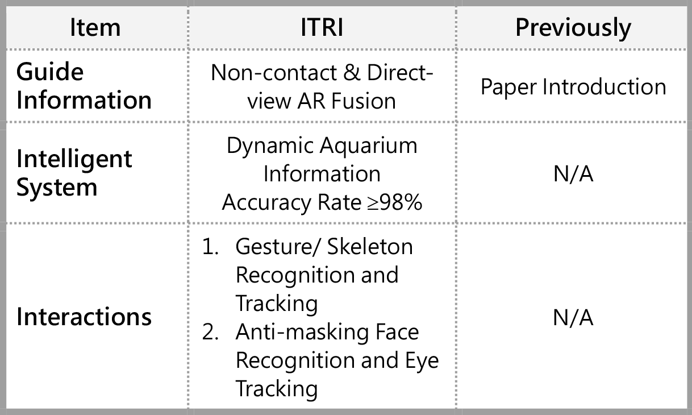

| 全球首創我視AI魚缸 The World's First I see AI Aquarium |
| 工研院以複合式指向虛實融合互動技術，開發雙動態映射座標轉換技術，搭配自主開發之使用者抗遮蔽臉部/眼球辨識與非接觸式手勢/骨架行為辨識追蹤，可隨著參觀者視野和水族箱內海洋生物位置動態調整導覽說明，達水族生物資訊準確率98%，未來可應用於智慧育樂等場域，提升擴增實境互動體驗。目前已應用於基隆國立海洋科技博物館-潮境智能海洋館，以”我視AI魚缸”展出。 ITRI has developed smart interactive aquarium based on compositely directional interactive AR (augmented reality) of virtual-real fusion technology. With self-developed technology of anti-masking face recognition, eyeball tracking, non-contact gesture and skeleton behavior recognition tracking, object tracking, the interactive aquarium can dynamically adjust marine life information according to visitor's viewing angle and dynamic position of marine life in the aquarium. The accuracy rate of marine life recognition is over 98%. It can be applied to smart edutainment and other filed in future to enhance the interactive AR (augmented reality) experience. This system has been applied to AI Aquarium at I Ocean pavilion in National Museum of Marine Science and Technology.  |
| 技術洽詢聯絡人：黃淑琦 聯絡電話：03-5917437 E-mail：JaniceHuang@itri.org.tw |